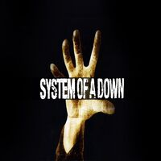
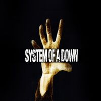
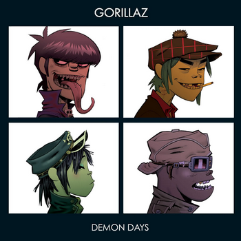

 Группа Gorillaz и её самый продаваемый альбом DemonDays.
Demon Days (с англ.«Дни демонов») — второй студийный альбом виртуальной группы Gorillaz, выпущенный в 2005 году. Наиболее известные композиции: «Feel Good Inc.», «DARE», «Dirty Harry», «El Mañana» и «Kids With Guns». Demon Days был записан с новым продюсером — Брайаном Бёртоном, более известным как Danger Mouse. В записи альбома приняли участие артисты разных жанров: De La Soul («Feel Good Inc.»), Roots Manuva («All Alone»), Нене Черри («Kids With Guns»), Шон Райдер («Dare»), Айк Тёрнер (фортепианное соло в «Every Planet We Reach Is Dead») и Деннис Хоппер («Fire Coming Out Of The Monkey’s Head»), Bootie Brown (Dirty Harry). Благодаря этому каждая песня имеет свой исключительный окрас и настроение.
В этом альбоме группа продолжила смешивание множества музыкальных стилей, но перешла на гораздо более высокую ступень. Хип-хоп, электроника, гитарный поп, кантри-энд-вестерн, — далеко не полный перечень этого фьюжн-альбома.
Обложка «Demon Days» является аллюзией на обложку альбома Let It Be группы The Beatles.
23 марта 2006 года Американская ассоциация звукозаписывающих компаний присвоила альбому двукратный платиновый статус. Журнал NME включил Demon Days в список 100 величайших альбомов десятилетия (англ. The Top 100 Greatest Albums of the Decade, начиная с января 2000 года и заканчивая декабрём 2009) на 98 месте. По версии портала Vice альбом занимает 60-ю строчку в списке «99 лучших танцевальных альбомов всех времён».